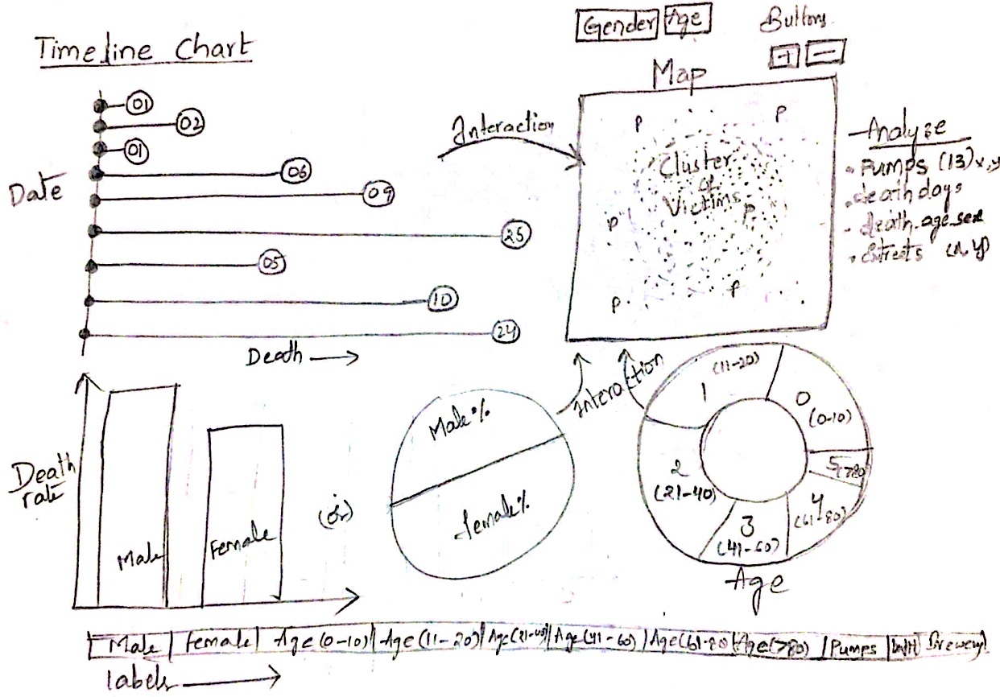
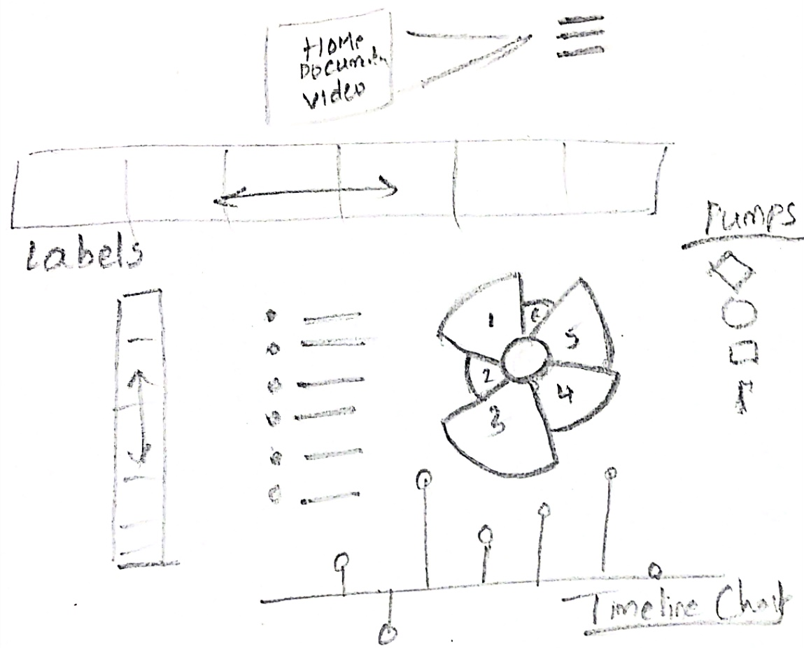

Introduction
In 1854 there was a severe outbreak of cholera in Soho, London. To know more about the Broad Street cholera outbreak see this article. Several people died due to the pandemic at that time. They are all deceased of the same disease in a single region of the city. The circumstances of the death were ascertained to be Cholera, a severe infection of the small intestine. A physician named John Snow discovered the source of this pandemic, he noticed that water from the particular pump in the city is the reason for deaths. He began to analyze the problem traditionally by drawing a tormented part of the city- which is Soho, he pointed the home of each victim with a dot. He did a mythical paper sketch to visualize the location of the victim by considering the pump position, brewery, and workhouse position as well. Most of the cholera mortality is concentrated near the pump which might have had cholera contaminated water. Envisioning that drinking water might be taking the deadly germs, he drew a map of the pumps that supplied water to Soho. Then he concluded that the homes of the victim who don't have tap water facilities or running faucets were used to drew the water from the neighborhood pump and used to carry it to their homes. After reviewing that he convinced the authorities of London to shutoff the suspected pump. Then it led to a decrease in the cholera deaths rapidly, almost to zero.
Design Process
- In this project, I have recreated Dr. John Snow's map using D3.js to create smart data visualizations. In extension to recreating the original map in the interactive version, I have also added a timeline chart and a couple of pie charts to the side of the recreated map. Besides, I have also interfaced elements in the map according to Age and Gender to make the visualization further interactive.
- This application shows multiple interactive visualizations of the data together. This application will also enable the user to dynamically sort the data based on the date of death, age, sex, and can see the filtering of data on the map accordingly. This visualization can assist someone like John Snow to lead an investigation on the Cholera pandemic.
- I began my project with a primary design layout to create engaging visualizations. I thought of keeping it as simple as possible, and at the same time, I want to convey the message efficiently through the design.
- Initially, I originated the project by analyzing all the given datasets which we have in our hands. There is a pumps dataset that has the locations of the 13 nearby pumps, a death days dataset that has the number of deaths for each day of the outbreak, deaths_age_sex dataset that has the location of each death in the death days file, in order and information on the age and sex of the victim.
- Then I decided to examine the data and imagined the potential results that are possible from this model. Also, analyzed different alliances through which I can get valuable information from these datasets. Eventually, I outlined some drawings based on the specifications.


Design Choices
- I started my work on paper and expected various visualizations based on the given datasets and their dimensions. Later I explored d3 categorical colors, Google colors, coolors.co, and Color Oracle tools. Mostly, I have chosen ColorBrewer and Color Oracle a color blindness simulator to make assured that it has no accessibility issues and to correctly visualize the data as it is the best color advisor for maps. It has an option concerning colorblind safe and many advanced features based on context, color transparency, and color schemes such as multi-hue, and single-hue.
- In the beginning, I thought of plotting a line chart and the gender distribution bar chart. But I made some changes to the design later, for which I have also used a bar chart to represent timeline chart and pie charts to represent the Age and Gender distribution besides the bar graph. I felt Pie-charts can help to represent the data in a more interactive way.
- I have created two separate files to store the information on the location of the brewery and the workhouse. Also, took the major street names information on the map based on the actual john snow map information. Subsequently, I chose to plot a bar chart with the dates on the Y-axis and the deaths on X-axis that occurred on that specific day. I have chosen a bar graph for timeline chart representation as they remain useful in summarizing the data sets in visual form and can be able to show the data variables including their trends very accurately.
- As it is significant to be capable of viewing the data from multiple viewpoints to get a fair idea of any hidden observations, I have designed buttons called Filter by Gender and Filter by Age, where the gender button represents the deaths of males and females in that particular period, and the age button divides the total dead people according to the age groups.
- I aspired to show the distribution of deaths according to the age and the number on a specific day. It was quite challenging to come up with an individual graph that would convey both at a time. Therefore I decided to connect the bar chart, pie charts with the map. Furthermore, I have come across computing Features like selecting a particular day to see cumulative deaths on that date in both the cholera map and at each bar plot.
Observations
- The most definite result is that all deaths are clustered almost around Broad Street. From further analysis, I can see some more trends like the people between 0-10 and 80 plus were the most affected age groups among all the age groups. Furthermore, I have observed that the deaths of females and males are almost equal. Therefore, immunity is not related to gender. Also, the Bar chart results show that most of the deaths happened in the time interval from 26th August to 5th September. And, 1st September has the maximum number of deaths during the Epidemic.
- Also, the Bar chart results show that most of the deaths happened in the time interval from 26th August to 5th September. And, 1st September has the maximum number of deaths during the Epidemic.
References